재귀-나무에서 각각의 노드는 재귀함수 호출집합 어딘가에 있는 한 개의 부분 문제의 비용을 나타낸다. 레벨당 비용을 구하기 위해 나무의 각 레벨 내에 있는 비용을 더한다. 그리고 모든 재귀 레벨의 비용을 결정하기 위해 레벨당 비용을 모두 더한다.
재귀 나무는 좋은 추측을 만드는데 잘 이용되며, 치환법(substitue method)으로 증명할 수 있다. 재귀 나무를 사용할 때 "너저분함(sloppiness)"이 약간 허용된다. 나중에 추측을 증명할 때 필요하기 때문이다.
예제1
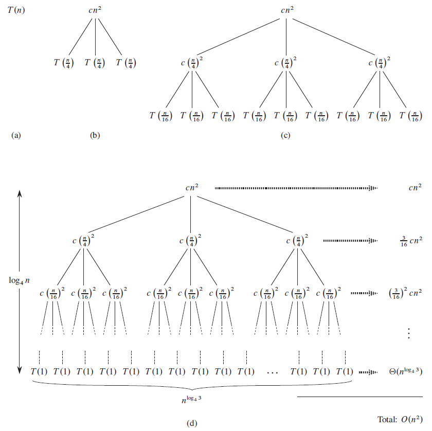
그림 4.5 - T(n) = 3T(n/4) + cn² 재귀식에 대한 재귀 나무 만들기
n은 4의 제곱으로 가정한다.
나무의 레벨은 log4n + 1 이다.
깊이는 0, 1, ..., log4n 이다.
깊이 i 에서 노드의 개수는 3i 이다.
깊이 log4n 에서 밑바닥 레벨은 3log4n(= nlog43) 개의 노드를 갖는다. 밑바닥 레벨의 총 비용인 nlog43T(1) 에서 T(1)은 상수라고 가정했기에 T(1)점근적으로 표기는 Θ(nlog43) 이다.
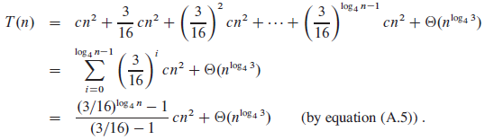
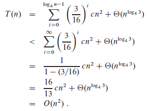
재귀식  에 대하여, 앞에서 추측한 상계 T(n) = O(n²) 를 증명하기 위해서 치환법을 쓰자.
에 대하여, 앞에서 추측한 상계 T(n) = O(n²) 를 증명하기 위해서 치환법을 쓰자.
Appendix A - Geometric series
x ≠ 1 인 실수에 대하여,
이 식을 기하(geometric) 또는 지수(exponential) 급수라고 부른다. 다음을 값으로 갖는다.
합이 무한이고 lxl < 1 일 때, 무한 감소 기하 급수를 얻는다.
예제2
※ 단순함을 위해 올림,버림을 생략
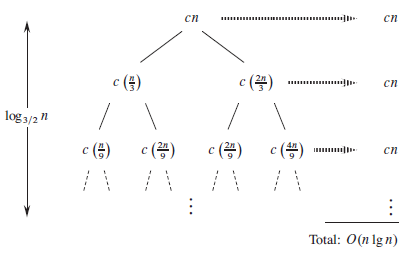
그림 4.6 - 재귀식  에 대한 재귀나무
에 대한 재귀나무
root에서 leaf로 가는 가장 긴 경로는 n -> (2/3)n -> (2/3)2n -> (2/3)kn 이다.
나무 높이 : (2/3)kn = 1, k = log3/2n
나뭇잎 비용 : Θ(nlog3/22), w(n lg n)
총 비용 : O(cn log3/2n) = O(n lg n)
예제2의 재귀 나무는 완전한 이진 트리가 아니다. nlog3/22 나뭇잎보다 적은 개수를 지니기 때문이다. 노드 또한 1/3, 2/3로 나누어지기 때문에 완전하지 않다. 1/3쪽 노드가 재귀가 더 빨리 끝난다.
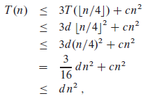
Exercises
4.4-1Use a recursion tree to determine a good asymptotic upper bound on the recurrence. Use the substitution method to verify your answer.
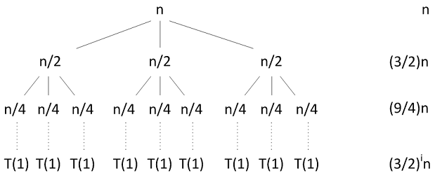
Θ(nlg3) 추측이 맞는지 확인하기 위해 치환법을 사용하자.
따라서, 상계는 O(nlg3) 이다.
4.4-2Use a recursion tree to determine a good asymptotic upper bound on the recurrence. Use the substitution method to verify your answer.
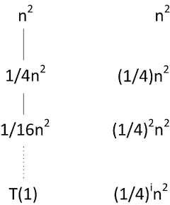
치환법 사용
4.4-3Use a recursion tree to determine a good asymptotic upper bound on the recurrence. Use the substitution method to verify your answer.
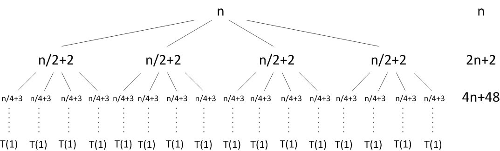
답1
재귀식 T(n) = 4T(n/2 + 2) + n 에서 4T(n/2+2) 부분의 '+2' 부분이 문제를 어렵게 만든다. 따라서, 문제를 쉽게 풀기 위해 '+2'를 무시한다. 새로운 재귀식 U(n) = 4U(n/2) + n
답2
4.4-4Use a recursion tree to determine a good asymptotic upper bound on the recurrence. Use the substitution method to verify your answer.
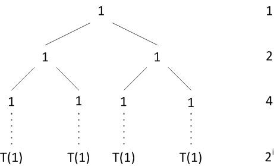
4.4-5Use a recursion tree to determine a good asymptotic upper bound on the recurrence. Use the substitution method to verify your answer.
4.4-6
Argue that the solution to the recurrence, where c is a constant, is Ω(n lg n) by appealing to a recursion tree.
나뭇잎으로 가는 가장 짧은 길은 T(n/3) 재귀항으로 깊이는 log3n 이다. 총 비용은 cnlog3n 으로 Ω(n lg n)을 만족한다.
4.4-7Draw the recursion tree for, where c is a constant, and provide a tight asymptotic bound on its solution. Verify your bound by the substitution method.
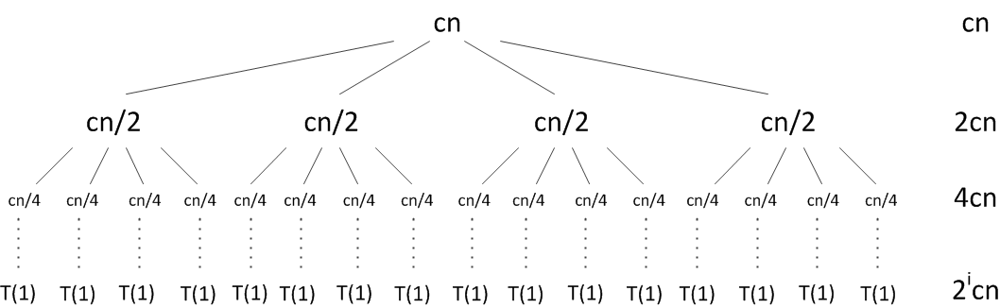
추측 : 상계 T(n) ≤ dn² + 2cn, 하계 T(n) ≥ dn² + 2cn
Ω-표기는 부등식만 바꾸어 적용하면 된다.
4.4-8Use a recursion tree to give an asymptotically tight solution to the recurrence, where a ≥ 1 and c > 0 are constants.
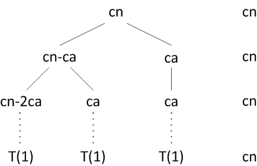
n값으로 a가 들어가면 재귀가 무한 반복된다. 하지만 재귀는 T(1)이 되면 끝나므로, 좌측 끝 T(n-a) 재귀가 T(1)이 될 때까지만 계산해주면 된다.
높이 : cn-cka = 1, cka = cn -1, k = (cn-1)/ca = (n-(1/c))/a
총 비용 : 
4.4-9
Use a recursion tree to give an asymptotically tight solution to the recurrence, where α is a constant in the range 0 < α < 1 and c > 0 is also a constant.
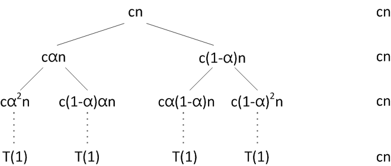
- cαkn = 1, αk = 1/cn, k = logα(1/cn) = log1/αcn
- c(1-α)kn = 1, (1-α)k = 1/cn, k = log(1-α)(1/cn) = log1/(1-α)cn
1번과 2번에 따라, α가 어떤 값이든 간에 상관없이 한 쪽은 긴 높이를 가진다. 그러므로 1/2 ≤ α < 1 이라고 가정한다. (1/2 ≤ 1-α< 1 라고 해도 상관 없다.)
O(cnlog1/αn) = O(n lg n) 이고 치환법으로 증명하면 Θ(n lg n)이 나온다.